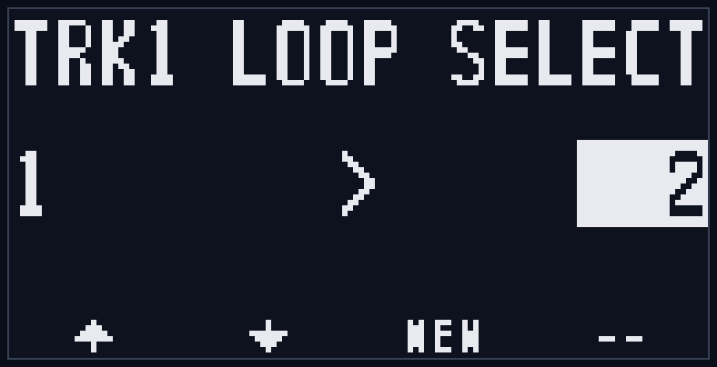
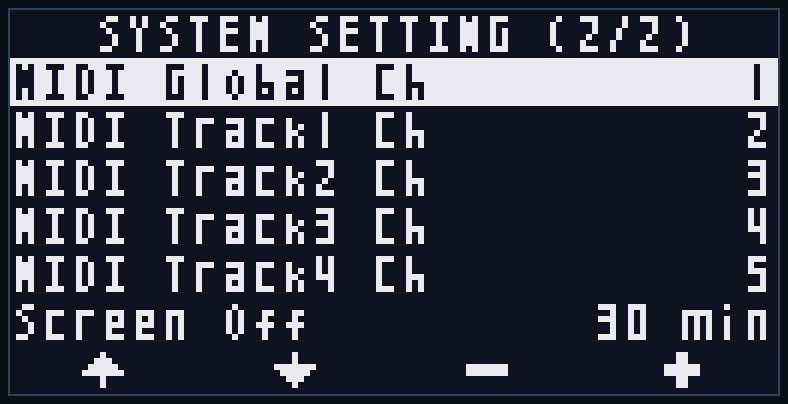

0. Introduction
For a long time, it bothered me personally that the modular synth world had no sampling looper as intuitive to use as a guitar pedal.
And even the ones that existed fell short of my ideal — too few tracks, no way to save to an SD card, and so on.
This unit was designed to be the sampling looper I, its developer, always wanted.
I hope it becomes yours as well.
1. Overview
LilaC Repeater is a 4-track stereo sampling looper.
Each track has its own independent recording length, playback speed, and playback direction, and all tracks can play back in sync.
Recordings are automatically saved to the SD card and can be recalled as a loopset at any time.
For external clocking, it supports clock pulse input and MIDI clock input (when using the optional MIDI CoM+), and even after recording you can continuously vary the playback speed in sync with the external clock.
You can also overdub with the playback speed altered.
By layering recordings at different playback speeds, you can go beyond simple loops into more experimental performance.
And because the playback position and the external/internal clock phase are always kept in sync by PLL control, the sample and clock never drift out of phase, no matter how long the loop plays.
Hardware specifications:
- Audio
- 96kHz/24bit stereo I/O (sample storage: 48kHz/32bit float)
- Input/output latency under 1ms
- Storage
- RAM: up to approx. 20 seconds of stereo sample recording per track
- SD card: stores all tracks' samples in any of 128 presets (loopsets)
- Display
- White OLED 128x64
- I/O
- Stereo input
- Stereo output
- Clock input
- Reset input
- Record trigger input
- Clock output
- MIDI expansion / UART chain connector
Feature list:
- 4 stereo tracks playing simultaneously
- Per-track playback direction, speed, panning, and loop range settings
- Clock-synced recording/playback
- Variable-speed overdubbing
- Auto-stop recording
- Overdub level setting (FDBK)
- Level faders for Dry (input) and each track
- One-level Undo/Redo of recorded samples
- Automatic saving to the SD card
- Remote control via external MIDI (requires MIDI CoM+)
2. Hardware
2-1. Front

| No. | Name | Description |
|---|---|---|
| 1 | L Input | Audio L-channel input. |
| 2 | R Input | Audio R-channel input. When nothing is plugged in here, the L-channel input signal is used for the R channel (internally normalled). |
| 3 | CLK Output | Sync clock pulse output (0/5V). |
| 4 | L Output | Audio L-channel output. |
| 5 | R Output | Audio R-channel output. |
| 6 | REC Input | Record trigger input. A trigger pulse triggers recording start and stop. |
| 7 | CLK Input | Sync clock pulse input. |
| 8 | RST Input | Playback-position reset pulse input. |
| 9 | OLED Display | 128x64 white OLED display. Shows various information. |
| 10 | FDBK Fader | Sets the mix ratio of the previously recorded sample during overdub. |
| 11 | SPEED Fader | Sets the playback speed between 60-240 BPM. Disabled during external sync. |
| 12 | DRY Fader | Sets the level of the input audio, which also serves as the recording input. |
| 13 | T1 Fader | Sets the playback level of track 1. |
| 14 | T2 Fader | Sets the playback level of track 2. |
| 15 | T3 Fader | Sets the playback level of track 3. |
| 16 | T4 Fader | Sets the playback level of track 4. |
| 17 | T1 Button | Selects track 1 as the recording target, and performs mode-specific operations. |
| 18 | T2 Button | Selects track 2 as the recording target, and performs mode-specific operations. |
| 19 | T3 Button | Selects track 3 as the recording target, and performs mode-specific operations. |
| 20 | T4 Button | Selects track 4 as the recording target, and performs mode-specific operations. |
| 21 | FUNC Button | Combined with other buttons to run sub-functions. Double-tap to return to Normal mode. The gold text below a button (SYSTEM / UNDO / AUTO) indicates that button's sub-function when pressed together with FUNC. |
| 22 | LOOP Button | Enters the loopset select screen. |
| 23 | CLEAR Button | Combined with other buttons to clear individual tracks or an entire loopset. |
| 24 | REC Button | Starts/stops recording/overdub. |
| 25 | START Button | Starts/stops playback of all tracks. |
2-2. Back
! Caution: Observe the polarity of the power and expansion connectors. Align the red stripe of the cable with the white line on the silkscreen. Reversing the polarity may cause damage.

| No. | Name | Description |
|---|---|---|
| 1 | USB connector (on Daisy Seed DFM2) | USB connector usable for firmware updates. |
| 2 | microSD card slot | Slot for the SD card used for firmware updates, sample import, and loopset storage. An SD card comes pre-inserted from the factory. |
| 3 | Power connector | 10-pin power connector. Align the white line on the silkscreen with the red stripe of the cable. |
| 4 | MIDI EXPAND/SLAVE connector | 6-pin connector. Used to connect the MIDI expansion module, or as the UART chain input (receiving from upstream). Align the white line on the silkscreen with the red stripe of the cable. |
| 5 | MASTER connector | 6-pin connector. Used as the UART chain output (sending downstream). Align the white line on the silkscreen with the red stripe of the cable. |
3. Quick Start

When you power on, the title screen (splash screen) and version number are shown for about 2 seconds, followed by an animation (about 3 seconds) in which the screen breaks into petals that drift away in the wind, after which the unit enters Normal mode (SD card loading and so on continues in the background during this time).
Immediately after startup you are in Normal mode.
Confirm that the T1 button is lit red and that track 1 is highlighted (inverted) on the Normal mode screen.
Connect the output of a sound-producing module to the L/R inputs, raise the DRY fader a little, and confirm that a level bar appears above the "IN" text at the left edge of the screen (the IN meter shows the level after the DRY fader).
Connect the L/R outputs to a mixer or an external output interface module.
If you want to sync to an external clock, feed a clock into the CLK input.
3-1. Recording Your First Loop
First, adjust the input level with the DRY fader.
Next, press the REC button to start recording.
At this point the REC button lights red and the recording popup appears.

If this popup gets in the way, a single press of the FUNC button closes it (recording continues).
Press the REC button again to stop recording; the unit automatically enters playback.
At this point the START button lights green.
Move the T1 fader to adjust the loop playback volume.
3-2. Recording Other Tracks
Press the T2 button: the T1 button goes dark and the T2 button lights red.
The recording target is now changed to track 2.
Press the REC button to start recording to track 2, and press again to stop.
Move the T2 fader to adjust the loop playback volume.
3-3. Layering with Overdub
With track 1 or 2 still set as the recording target, pressing the REC button starts an overdub.
At this point the overdub popup is shown.

The level of the previous recording during overdub can be adjusted with the FDBK fader.
While overdubbing, the loop wraps back to its beginning and overdubbing continues (*1).
Press the REC button again to stop the overdub.
*1 By continuing to overdub with FDBK lowered a little, you get an effect like a delay, where past sounds gradually fade away.
3-4. Undoing
This unit supports per-track, one-level Undo.
Press the T1-T4 button of a recorded track to set it as the recording target, then press FUNC+CLEAR to return to the previous recording/overdub state.
Pressing FUNC+CLEAR again performs a Redo, returning to the latest recording/overdub state.
If you want to start a track's recording over from scratch, hold the CLEAR button and press a T1-T4 button to clear the recording of the corresponding track.
Immediately after clearing, you can still use FUNC+CLEAR to return to the latest recording/overdub state.
To clear all tracks, hold the CLEAR button and press the LOOP button.
A confirmation popup appears; press the T3 button to erase the recordings of all tracks.
To cancel, press the T4 button.

4. Feature Concepts
4-1. Tracks
There are four tracks, each holding the following information:
- Recorded sample
- Undo buffer
- Base tempo (the tempo at recording time)
- Number of recorded steps
- Playback direction (forward/reverse)
- Playback speed (x0.5/x1/x2)
- Panning
- Loop range (the start position and range within the recorded sample that actually loops; the sample itself is not changed)
- Playback level (not saved to the SD card; reflected in real time from each track fader)
Unlike a typical multi-track looper, information such as step count and playback direction is held per track, enabling polyrhythmic performance.
4-2. Steps
A clock unit of 4 ppqn (four per beat) is called a step.
Playback, recording, loopset switching, Undo, and so on occur when a step advances.
4-3. Base Tempo
This is the tempo (BPM) at which a track was recorded.
If you change the tempo after recording a loop, the sample playback speed is corrected by the speed difference between the base tempo and the playback tempo.
For example, if you record at 80 BPM and then set the tempo to 160 BPM, the sample playback speed doubles.
4-4. Recording Target and Edit Target
A track's selection state has two kinds: the "recording target" and the "edit target".
The "recording target" is selected in Normal mode and is used to specify the track to record to and the track to Undo.
The "edit target", on the other hand, specifies the track to be edited in Track Edit mode.
Also, while in Track Edit mode, the Undo target track is the "edit target" rather than the "recording target".
(See Section 7-2.)
4-5. Playback Level / Direction / Speed / PAN / Loop Range
These are per-track playback settings.
Everything except the playback level is automatically saved to the SD card.
The loop range specifies the portion of the recorded sample that actually loops, and is edited in Track Edit mode (see Section 7-2).
4-6. Loopsets
The recording state of all four tracks (including the Undo buffer) together with their playback settings is handled as a unit called a loopset. Loopsets are numbered 1 to 128.
Switching loopsets lets you swap all tracks' loops at once (LOOP button; see Section 7-3).
Furthermore, on this unit you can also switch individual tracks to a different loopset independently (LOOP+T1-4). This lets you, for example, swap out only track 1 for a different phrase.
- Base loopset: the common number when all tracks share the same loopset number. It is shown in the center of the Normal mode header (waveform icon + number). The LOOP single-press loopset selection switches this base (= all tracks) together.
- Track loopset: the loopset each track individually belongs to. When you use LOOP+T1-4 to switch only the target track to another loopset, only that track ends up with a different number from the others.
When even one track has a different number, there is no single number common to all tracks, so the header shows "--". The current loopset number of each track is always shown at the top of each track's column in Normal mode (page 1) (see Section 7-1). Even if the track numbers become mixed, pressing LOOP once again to align all tracks to the same number lets you handle them together as before.
The per-track loopset settings are saved to the SD card and restored on the next startup.
4-7. Relationship Between DRY/FDBK and Recording Level
The DRY level functions not only as the input level but also as the recording level.
The FDBK level has no effect on the first recording; during overdub it controls how much the previous recording is attenuated.
4-8. Clock Sync
In addition to sync via the internal clock, the unit supports sync via clock input and MIDI input.
However, sync via MIDI input requires the optional MIDI expansion module (MIDI CoM+).
(See Section 8.)
4-9. Automatic Backup
Changes to a loopset, including the Undo buffer, are automatically saved to the SD card.
On the next startup, the information of the last selected loopset is automatically loaded from the SD card.
(See Section 9.)
5. UI Concepts
5-1. Buttons
The T1, T2, T3, and T4 buttons change function per mode.
The FUNC, LOOP, CLEAR, REC, and START buttons are common across modes, though some may be disabled depending on the mode.
(See Section 7.)
5-2. Level Faders
All faders — FDBK, SPEED, DRY, T1, T2, T3, T4 — are available in every mode.
However, the SPEED fader is disabled during external sync.
During playback, the SPEED fader's LED pulses in time with the beat — brightest at the start of each beat, dimming toward the end of the beat — so the current tempo and beat timing are visible at a glance, a cue for the beat position at which to start recording. This pulsing is synced to the beat phase for both internal clock and external sync (it occurs even when external sync disables the SPEED fader itself). While stopped, the LED stays lit.
5-3. Transport I/O (CLK/RST/REC IN, CLK OUT)
CLK is for external clock sync, RST is for playback-position reset.
REC is a record trigger with the same function as pressing the REC button.
Whether internally or externally synced, a clock pulse is output from the CLK output during playback.
When stopped, the clock pulse output also stops.
If you turn on "CLK IN Start" in the system settings, playback starts automatically when the CLK input starts receiving an external clock (the first pulse after the clock has been absent for 2 seconds or more). If you stop manually while the clock continues, playback does not resume on its own (default OFF; see Section 7-4).
5-4. Screen Layout
In every mode, a status badge is shown at the top right.
(See Appendix C.)

Also, during recording and similar states, a dedicated popup is shown.
A single press of the FUNC button while this popup is shown closes it so you can check the screen (recording/overdub itself continues). Once closed, it stays closed until the next recording/overdub starts.
When an error occurs, or for special notifications, an information or warning popup is shown.

For details, see Section 6 and Section 7.
6. Common Operations
6-1. Recording and Playback
6-1-1. Recording
Recording is performed on the currently selected recording target (specified with the T1-T4 buttons in Normal mode).
Press the REC button to start recording, and press again to stop. Feeding a trigger pulse into the REC input does the same.
During recording, the REC button lights red and the recording popup is shown.
The popup shows the track number (REC TRKn), a beat mark indicating the recording length, the number of recorded steps, and memory usage (water-tank icon + %). The step count and memory usage are shown side by side on the lower row, and the step count counts up in real time during recording.
The recording level is set with the DRY fader (see Section 4-7).
When you stop recording, the unit automatically enters playback (the START button lights green).
When you start recording (or overdub) from a stopped state, the entire transport begins playing at that moment. The target track is recorded/overdubbed, while other already-recorded tracks each start playing from their own beginning at the same time (the same behavior as pressing START). This lets you record on top of an existing loop, and after you stop recording, all tracks continue playing.
Also, pressing the START button during recording stops recording on the spot and transitions straight into overdub of the same track.
If you start recording during playback or while the clock is running, the recording start timing is aligned according to the Loop Sync setting (Loop Sync is a setting for aligning the start of recording/overdub and so on to the clock; see Section 7-4). Stopping the recording, however, happens immediately.
Note that if you press REC with an already-recorded track set as the recording target, overdub starts instead of recording (see Section 6-2).
* Immediately after startup or right after switching loopsets, recording may not be able to start because Undo data is still loading ("SYNCING"). Wait until the indication disappears before operating.
6-1-2. Play/Stop
Press the START button to start/stop playback of all tracks. During playback, the START button lights green.
During playback, a sync clock pulse is output from the CLK output; it stops when playback stops (see Section 5-3).
Because each track has its own recording length, playback direction, and playback speed, each loops at its own length during playback (see Section 4-1).
With internal clock sync, the moment you press START becomes the clock's origin.
With external clock sync, playback start is aligned to the next step boundary.
6-1-3. Auto-Stop Recording
Normal recording is stopped manually, but if you start recording with FUNC+REC, recording stops automatically once a predetermined number of steps is reached.
The number of steps at which to stop can be set in the range of 1-128 steps in the system setting "Auto Stop" (default 64 steps = 16 beats, max 128 steps = 32 beats; see Section 7-4).
The recording popup shows the auto-stop position as a vertical bar.
If you press FUNC+REC while already recording with a normal REC, a recording stop is scheduled at the next clean boundary.
The stop timing is the next 16-step (4-beat) boundary when Loop Sync is EACHSTEP, or the boundary of that setting when it is set to ANY END / T1 END (see Section 7-4).
Here, "scheduled" means not executing the operation immediately on the spot, but waiting until the clock boundary determined by the Loop Sync setting before executing. This concept is common to starting recording/overdub during playback, Undo, loopset switching, and so on (in this manual we call it "scheduled" from here on).
6-2. Overdub
6-2-1. Starting/Stopping Overdub
Pressing the REC button with an already-recorded track set as the recording target starts an overdub.
During overdub, the REC button lights red and the overdub popup (OVERDUB TRKn) is shown.
The lower row of the popup shows the number of overdubbed steps and the loop length in the form "recorded/total" (e.g. 123/256); once the loop completes a full cycle, the count stays fixed at that value.
During overdub, the past recording plays while the input sound is layered and recorded; when the end of the loop is reached, it returns to the beginning and continues overdubbing. If a loop range is set, overdub occurs only within the loop range (see Section 7-2).
The mix ratio (decay ratio) of the past recording is set with the FDBK fader (see Section 4-7). Continuing to layer with FDBK lowered, the older sound gradually fades away, like a delay.
Press the REC button again to stop the overdub. The stop is immediate.
Also, pressing the START button during recording stops recording and transitions straight into overdub (see Section 6-1-1).
6-2-2. Auto-Stop Overdub
If you start overdubbing a recorded track with FUNC+REC, it stops automatically once one full loop cycle of overdub has been performed (or one full loop-range cycle if a loop range is set).
If you press FUNC+REC during an overdub started with a normal REC, it stops at whichever comes first: the next 16-step (4-beat) boundary, or one full loop cycle.
6-3. Undo/Clear Operations
6-3-1. Undo/Redo of Track Recording
This unit supports one-level Undo/Redo per track.
Pressing the FUNC+CLEAR button returns the target track to its previous recording/overdub state (Undo). Pressing FUNC+CLEAR again returns it to the latest state (Redo).
The Undo target track is the recording target in Normal mode and the edit target in Track Edit mode (see Section 4-4).
Undo/Redo during playback takes effect on a step boundary; while stopped it is applied immediately.
Undo cannot be performed in the following states, and a "UNDO BLOCKED" warning is shown:
- During recording/overdub
- While Undo data is syncing (while the loading badge is shown at the top right of the screen)
- In Loopset Select mode (which is selection-only)
Wait until the indication disappears before operating (see Appendix D and Appendix E-6).
6-3-2. Clearing a Track
Holding the CLEAR button and pressing a T1-T4 button immediately clears the recording of the corresponding track.
When a clear is performed, "CLEAR TRKn" (n is the track number) is shown in the center of the screen for about 1 second (see Appendix C-2).
Immediately after clearing, you can restore that track to its pre-clear recording state by pressing FUNC+CLEAR with it set as the recording target (edit target in Track Edit mode) (see Section 6-3-1).
Note that while Undo data is syncing, "SYNCING" is shown and clearing cannot be performed (retry after syncing completes).
Individual track clearing is not possible in Loopset Select mode ("CLEAR BLOCKED / loop select"; see Appendix D).
6-3-3. Clearing a Loopset
Holding the CLEAR button and pressing the LOOP button clears all tracks (including Undo data) at once. Each track empties the loopset it currently belongs to. Even if the tracks are set to different loopset numbers, each track is cleared while staying in its own loopset (see Section 4-6).
To prevent mistakes, a confirmation popup ("CLEAR LOOP?") is shown. Press the T3 button to execute, or the T4 button to cancel. The middle of the popup shows the target: "loopset N" (N is the loopset number) when all tracks are on the same loopset, or "all tracks" when they are on different loopsets.
Unlike individual track clearing, this operation cannot be undone. The saved data on the SD card is also deleted, and each track returns to the unrecorded (NEW) state.
Clearing is not possible in the following cases, and the corresponding warning is shown:
- The SD card is unavailable ("CLEAR BLOCKED / No SD")
- During recording/overdub ("CLEAR BLOCKED / Recording...")
- While Undo data is syncing ("SYNCING")
- During a save/load/scan or similar process ("CLEAR BLOCKED / Busy...")
- In Loopset Select mode ("CLEAR BLOCKED / loop select")
(See Appendix D.)
6-4. Reset Operation
This operation returns the playback position to the beginning of the loop.
Pressing the FUNC+START button resets the playback position of all tracks to the loop start. Feeding a trigger into the RST input does the same.
The reset takes effect on a step boundary during playback.
While the RST input is held HIGH as a gate, the playback position is fixed at the beginning (see Section 5-3).
Also, when a MIDI START is received, the playback position is reset and playback starts (see Section 8).
6-5. Transitions Between Modes
Immediately after startup you are in Normal mode.
You can move to other modes with the following operations.
| Operation | Destination mode |
|---|---|
| FUNC+T1/T2/T3/T4 | Sets the track corresponding to the pressed track button (T1-4) as the edit target and enters Track Edit mode. |
| FUNCx2 (double tap) | Normal mode |
| LOOP | Loopset Select mode (base = all tracks) |
| LOOP+T1/T2/T3/T4 | Enters Track Loopset Select mode for the pressed track (switching only that track; see Section 7-3) |
| FUNC+LOOP | System Settings mode |
* The notation "A+B" means "hold button A and press button B".
* A single LOOP press is registered when the button is released, so if you keep holding LOOP and then press T1-4, it becomes Track Loopset Select.
Also, for any mode other than Normal mode, repeating the same operation used to enter that mode returns you to Normal mode.
Operations to return to Normal mode:
- Track Edit mode: FUNC + the edit-target track's T1-4 button
- Loopset Select mode (both base and track loopset): press the LOOP button again
- System Settings mode: press the FUNC+LOOP button again
- All modes: double-tap the FUNC button
7. Mode Details
In addition to the common operations (Section 6), each mode has its own T1-T4 button functions and screen display.
For transitions between modes, see Section 6-5.
7-1. Normal Mode

This is the mode you're in right after startup — the basic screen for selecting the recording target.
Pressing a T1-T4 button by itself switches the recording target to the corresponding track. The selected track's button lights red, and the corresponding track column is highlighted (inverted) on the screen (the target cannot be switched during recording/overdub).
All common operations — record (REC), play (START), overdub, auto-stop, Undo/clear, reset — are available in this mode (see Section 6).
Screen layout:
- Header (top row): tempo display (base tempo > playback tempo in BPM), the base loopset in the center (waveform icon + number; the common number when all tracks share the same loopset number, or "--" when the tracks are on different loopsets; see Section 4-6), memory usage (water-tank icon + %), and the processing badge at the top right
- Track loopset row (page 1): at the top of each track column, the loopset number that track currently belongs to (waveform icon + number) is always shown. Because of this row, the input/playback level meters and the step bars are one display row shorter in height
- Left edge: input level meters (L/R, "IN" label). Shows the actual recorded/monitored level after the DRY fader
- Track columns (4 columns): each track's playback level meters (L/R), playback position/state (during recording "REC", during playback the step number, with "<" prefixed during reverse playback), and a progress bar based on the loop range. The bar length represents the loop range length (Loop Length), and the fill within the bar represents the playback position within the loop range. The step number is also relative to the start of the loop range (if no loop range is set, the entire recording is the loop range, and the display is for the whole recording as before). During step operation by MIDI notes (see Section 8-5), the reference for these relative displays switches to the position being controlled (the jump destination or stutter range)
- Footer: operation hint ("T1-4: SELECT REC TARGET")
Each level meter shows the volume actually output (monitored). The input meter is after the DRY fader; each track's meter is after the playback level fader and pan. So a track panned to one side moves only that side's bar. Also, to keep the bars from flickering, the meters fall back slightly more slowly as the sound fades.
LED lighting:
- T1-T4: the recording target track lights
- REC: lights while the recording target is recording/overdubbing
- START: lights during playback
7-2. Track Edit Mode

Enter by setting a track as the edit target with FUNC+T1-T4. This mode edits per-track playback parameters (playback direction, playback speed, panning, loop range). These settings are automatically saved to the SD card (see Section 4-5).
T1-T4 button functions:
- T1/T2: select the item to edit (←/→; moves in the order playback direction → playback speed → pan → step control → Loop Start → Loop Length)
- T3/T4: change the value (−/+; holding changes it continuously. For the pan and loop range (Loop Start/Loop Length) items, keeping the button held speeds up the change even further)
- Pressing T3 and T4 together resets the selected item to its default (pan = center (C) / Loop Start = 0 / Loop Length = full (entire loop); playback direction, playback speed, and step control have no reset action)
Items you can edit:
- Playback direction: forward (FWD, right-pointing triangle) / reverse (REV, left-pointing triangle)
- Playback speed: x0.5 / x1.0 / x2.0
- Pan: C (center) / L1-L100 / R1-R100
- Loop range: the portion of the recorded sample that actually loops. On the step timeline in the middle row, you edit the left value (= Loop Start, the start step) and the right value (= Loop Length, in steps). The loop range can also wrap around past the end of the recording (e.g. with Loop Start=1 and Loop Length=16, it loops end → beginning → start position). It can only be edited on tracks that are recorded and not currently recording/overdubbing.
- Step control (STEP): one of four values — ONE / -- / LOOP / STUT (default STUT). This item sets the behavior of the feature that lets notes from an external MIDI keyboard control the track's playback position (-- means this feature is not used = disabled). For the specific behavior and use of each value, see Section 8-5. Including the default STUT, none of the values do anything unless a MIDI channel is assigned to the track and the corresponding notes are received, so without MIDI it is no different from normal loop playback. It can only be changed on tracks that are recorded and not currently recording/overdubbing.
Screen layout:
- Top row: a waveform thumbnail of the recorded sample and a playback-position marker. If a loop range is set, the out-of-range portion is shown inverted (during a step jump, the inverted range is based on the jump position)
- Middle row: the step timeline (left = Loop Start (start step), center = current step (relative within the loop range), right = Loop Length). While Loop Start/Loop Length is selected, that value is shown inverted. During a step jump, ">jump-destination step" is shown to the right of Loop Start on the left
- Parameter row: playback direction (triangle) / playback speed / pan. The selected item is inverted
- Bottom row: track volume on the left (VOL:NN%, display only; changes with each track fader), step control on the right (STEP:ONE/--/LOOP/STUT). While step control is selected, it is inverted
- Footer: ←/→/−/+ icons
LED lighting:
- The edit-target track blinks
- The recording target (if different from the edit target) lights
Common operations such as record and play are also available in this mode, but recording still applies to the recording target (which is managed separately from the edit target; see Section 4-4).
Note that while in Track Edit mode, the Undo (FUNC+CLEAR) target track is also the edit target.
Changes to playback direction, playback speed, and loop range are reflected at the next step boundary during playback. Pan is reflected immediately.
7-3. Loopset Select Mode

This mode switches the loopset (1-128) of all tracks. Which tracks get switched (all tracks or just one) depends on how you enter the mode (see Section 4-6):
- Base Loopset Select: enter with a single LOOP press. Switches all tracks to the same loopset simultaneously.
- Track Loopset Select: enter with LOOP+T1-4. Switches only the pressed track to a different loopset (other tracks unchanged).
Both share the same screen layout and operations; only the title and the range of the switch target differ. Editing operations such as record, clear, and Undo are not possible (see Appendix D).
To switch a loopset, you must first load the target loopset with a LOAD operation.
Pressing the T3 button after loading completes executes the loopset switch.
T1-T4 button functions:
- T1/T2: select the target loopset number (−/+; wraps 1-128). Holding changes it continuously (auto-advance starts after about 0.5 seconds and speeds up as you keep holding)
- T3: behavior changes depending on the state of the target loopset (below)
- T4: unused
T3 button behavior (shown in the label at the bottom of the screen and in the footer):
- LOAD: when a recorded, different loopset is selected. Starts loading from the SD card (progress bar shown). When loading completes, the label changes to "CHNG".
- CHNG: pressing T3 again after loading completes switches the loopset.
- NEW: when an unrecorded (empty) loopset is selected. Switches to it immediately as a new loopset. In base select this is NEW when all tracks are empty; in track select it is NEW when that track is empty.
- --: when the current loopset is selected (nothing to switch to).
The switch timing is immediate while stopped, and aligned to a clock boundary according to the Loop Sync setting during playback. When the switch completes, you automatically return to Normal mode.
Screen layout:
- Title: "LOOP SELECT" for base select, "TRKn LOOP SELECT" (n is the target track number) for track select
- Center: current loopset number > target loopset number (the target is shown in an inverted frame). In base select, when the tracks are not all on the same loopset, the current number is shown as "--"
- Status display: loading progress bar / "PRESS 3 TO CHANGE!" / switching animation / "SAVING..." (waiting for the save to finish)
- Footer: ↑/↓ (T1/T2), T3 label (LOAD/NEW/CHNG/--, CHNG blinks)
Example screen for track loopset select (when the target is track 1):

In this mode, play/stop (START), playback-position reset (FUNC+START), and transition to Track Edit mode (FUNC+Tn) are possible.
Operations are restricted during loading or after a switch is confirmed (see Appendix D).
Also, if a loaded loopset contains a broken track, a "DATA BROKEN" warning is shown (see Appendix E-2).
! Note: Moving to Track Loopset Select is not possible while the target track itself is recording/overdubbing ("LOOP BLOCKED / Recording..."). Even if another track (the recording target) is recording, Track Loopset Select for other, stopped tracks is possible. Base Loopset Select (single LOOP press) is, as before, not possible while the recording target is recording/overdubbing.
! Note: If you entered Track Loopset Select while another track was still recording, you can stop that recording with the REC button (or external REC input/MIDI) (this does not affect the select operation). During this time, a single START press does nothing (to avoid accidentally turning the recording into an overdub; the Normal mode behavior of "START during recording transitions to overdub" does not happen in this mode).
7-4. System Settings Mode

Enter with FUNC+LOOP. This mode configures the unit's overall behavior. Settings are automatically saved to the SD card and carried over to the next startup (see Section 9).
Because there are many settings, the screen is split into two pages. The current page number is shown in the title as "SYSTEM SETTING (1/2)", and moving the cursor past the top/bottom of a page switches to the adjacent page.
T1-T4 button functions:
- T1/T2: move the cursor (↑/↓; crossing the edge of a page switches to the adjacent page)
- T3/T4: change the value (−/+). The Auto Stop item changes continuously when held, speeding up the longer you hold (T3+T4 together returns it to the middle value of 64 steps). The MIDI channel items on page 2 also change continuously when held, but because their range is narrow they do not accelerate, and they stop at the end values ("--" or 16) without wrapping
Settings (page 1):
| Item | Values | Description |
|---|---|---|
| Loop Sync | EACHSTEP / ANY END / T1 END | Determines when operations scheduled during playback (starting recording/overdub, Undo, loopset switching, etc.) are executed in sync with the clock. EACHSTEP = each step (smallest unit), ANY END = the loop end of any track, T1 END = the loop end of track 1. Default is EACHSTEP. |
| Auto Stop | 1-128 steps | The number of steps at which auto-stop recording (FUNC+REC) stops automatically. Default is 64 steps (= 16 beats). Holding T3/T4 changes it continuously (and accelerates the longer you hold); T3+T4 together returns it to the middle value (64 steps). (See Section 6-1-3.) |
| Smooth | ON / OFF | Applies a short crossfade at loop seams and when recording/overdub stops, suppressing click noise. Default is ON. |
| MIDI Sync | TX RX / TX / RX / -- | Enable/disable MIDI clock transmission (TX) / reception (RX). Requires the optional MIDI expansion module. Default is TX RX. (See Section 8.) |
| Send MIDI CLK | PLAY / ALWAYS | When to send MIDI clock. PLAY = send only during playback (default), ALWAYS = send at all times including while stopped. Use ALWAYS when you always want external gear to follow this unit's tempo. (See Section 8-3-2.) |
| CLK IN Start | ON / OFF | Setting to start playback automatically when an external clock is received at the CLK input. ON = auto-play on clock reception, OFF = do not auto-play (default). Auto-play only works when reception begins after the clock has been absent for 2 seconds or more (it does not resume if you stop manually while the clock continues). Because the playback pitch can waver until the tempo settles right after the first clock reception, the default is OFF. MIDI clock is excluded (MIDI playback is controlled by transport messages; see Section 8-3-1). (See Section 5-3.) |
Settings (page 2) — MIDI remote channel settings, and the screen auto-off setting (Screen Off). The channels specified in the channel settings are used in common for both note operations (Sections 8-4 and 8-5) and CC operations (Section 8-6) (requires the optional MIDI expansion module).

| Item | Values | Description |
|---|---|---|
| MIDI Global Ch | -- / 1-16 | The MIDI channel that accepts MIDI remote control. Used for note-based record trigger, playback-position reset, and remote control of playback direction/speed (Section 8-4), and for CC-based DRY/FDBK level control (CC#7/#8; Section 8-6). -- disables it (default); 1-16 receives on that channel. |
| MIDI Track1 Ch - MIDI Track4 Ch | -- / 1-16 | The MIDI channel that accepts MIDI operation for each track. Used for note-based step operation (jump/stutter; Section 8-5) and for CC-based control of playback level/direction/pan/speed/loop range/step control (Section 8-6). Set individually per track. -- disables it (default). Operates independently of MIDI Global Ch. |
| Screen Off | 10 min / 30 min / 60 min / NEVER | The time until the OLED display automatically turns off when idle. With NEVER, the display stays on. Default is 30 min. A button or fader operation turns it back on (MIDI input does not count as activity — it neither resets the idle timer nor turns the display back on). (This setting is unrelated to MIDI, but is placed on the last row of page 2.) |
Screen layout:
- Title: "SYSTEM SETTING (page number/total pages)"
- A list of settings (label + current value). The selected row is inverted
- Footer: ↑/↓/−/+ icons
8. Clock Sync and MIDI
In addition to the internal clock, LilaC Repeater supports external sync via the CLK input (clock pulse) and MIDI clock (when using the optional MIDI expansion module).
Recording/playback steps are always synced to the clock, and because the phase of the playback position and the clock is maintained by PLL control, the sample and clock never drift out of phase no matter how long the loop plays.
8-1. Clock Sources and Automatic Switching
There are three clock sources: "internal", "CLK input (external clock pulse)", and "MIDI clock".
Source switching happens automatically.
- Right after startup, the clock is internal. The tempo is set with the SPEED fader in the range 60-240 BPM.
- When a clock pulse is fed to the CLK input, it switches to CLK input sync.
- When MIDI clock (or MIDI START) is received, it switches to MIDI sync. However, while CLK input sync is active, the CLK input takes priority; MIDI sync takes over after the CLK input is lost and the clock returns to internal.
- When the external clock is absent for a certain time (about 4x the most recent interval, at least about 2 seconds), it returns to the internal clock while holding the last detected tempo. If the CLK input is lost before the tempo is confirmed (before the second pulse arrives), it returns to the internal clock at the previous tempo after about 1 second.
- When you stop playback, the clock source returns to internal (if an external master is running, it switches back to external sync on the next clock/pulse).
During external sync, the SPEED fader is disabled (see Section 5-2).
8-2. CLK In/Out and Reset (CLK IN / CLK OUT / RST)
Sync and output via clock pulses. This unit sends and receives clock in steps (4 ppqn = 4 pulses per beat) (see Section 4-2).
- CLK input: feed in clock pulses at step resolution (4 ppqn). The tempo is measured from the interval of the input pulses and synced. Supported tempo is 20 BPM or higher (pulse interval within 0.75 seconds). External clock sync below 20 BPM is not supported. Pulses slower than this interval are not treated as tempo, and it returns to internal clock operation holding the previous tempo after about 1 second (only step-phase re-sync is performed per pulse).
- CLK output: during playback, outputs a clock pulse of about 5ms per step (4 ppqn). Pulses are output during both internal and external sync; nothing is output while stopped.
- RST input: returns the playback position to the loop start. Held fixed at the start while the gate is held HIGH (see Section 6-4).
8-3. MIDI Sync
Using the optional MIDI expansion module (MIDI CoM+) enables clock and transport sync via MIDI IN/OUT.
MIDI clock supports the standard 24 ppqn.

Connect the MIDI expansion module to the MIDI EXPAND/SLAVE connector on the back (see Section 2-2).
! Caution: Do not connect the MIDI expansion module to the MASTER connector.
8-3-1. MIDI Reception (RX)
Receives the following messages from an external MIDI master to sync (when RX is enabled in the MIDI Sync setting).
| Message | Behavior |
|---|---|
| MIDI clock (24 ppqn) | Switch to MIDI sync and sync to tempo and phase. |
| Start | Return the playback position to the beginning and start playback. |
| Continue | Start playback. Because stopped tracks start playing from the beginning, this normally behaves the same as Start (unlike Start, it does not change the position of tracks already playing). |
| Stop | Stop playback. |
| Song Position Pointer (position 0) | Return the playback position to the beginning. |
Note that playback also follows a very slow MIDI clock corresponding to below 20 BPM, but this is not reflected in the tempo handed over to the internal clock when the clock stops (it holds the last tempo detected at 20 BPM or above).
8-3-2. MIDI Transmission (TX)
Transmits this unit's clock and transport to external MIDI gear (when TX is enabled in the MIDI Sync setting).
| Message | Transmit timing |
|---|---|
| MIDI clock (24 ppqn) | Follows the system setting "Send MIDI CLK". PLAY = only during playback (default), ALWAYS = at all times including while stopped. In either mode, clock is transmitted whether the clock source is internal or external. |
| Start | When playback starts |
| Stop | When playback stops |
| Song Position (position 0) | When the playback position of all tracks is reset during playback (FUNC+START, RST input, MIDI remote B, etc.) |
Send MIDI CLK (PLAY / ALWAYS) … selects when MIDI clock is transmitted.
- PLAY (default): sends clock only during playback, and does not send while stopped. When stopped, external sequencers synced to it also stop.
- ALWAYS: keeps sending clock at all times including while stopped. Use when you want an external drum machine or arpeggiator to always follow this unit's tempo even while the unit is stopped (Start/Stop for playback start/stop themselves are still sent as before).
This setting applies both to MIDI transmission (MIDI OUT) and to the clock sent to a downstream LilaC Repeater over the UART chain (see Section 11).
8-3-3. MIDI Sync Setting
Switch transmission/reception enable/disable with the system setting "MIDI Sync" (see Section 7-4).
| Value | Behavior |
|---|---|
| TX RX | Both transmission and reception enabled (default). |
| TX | Transmission only. When you want to sync external gear to this unit. |
| RX | Reception only. When you want to sync this unit to an external master. |
| -- | Disable MIDI sync. Operates on the internal clock or CLK input. |
The MIDI clock and transport (Start/Stop/Continue) this unit uses for sync are system real-time messages that have no MIDI channel, so no MIDI channel setting is needed.
Note that messages received by the MIDI expansion module are forwarded as-is to the UART chain downstream, allowing multiple LilaC Repeaters to be synced (see Section 11).
8-4. MIDI Remote Control
Connecting the optional MIDI expansion module and setting the system setting "MIDI Global Ch" (page 2) to 1-16 lets you remotely control this unit with note input from an external MIDI keyboard (see Section 7-4). It is disabled when the setting is "--".
The operation is determined by the remainder of the note number divided by 12 (note number % 12), so any octave of the keyboard performs the same function. White keys perform the operations, and black keys are modifiers that select the target track (valid only while held).
| Key | Function | Type |
|---|---|---|
| C | Set playback direction to reverse (REV) | Trigger (the moment pressed) |
| D | Set playback direction to forward (FWD) | Trigger |
| E | Playback speed x0.5 | Trigger |
| F | Playback speed x1.0 | Trigger |
| G | Playback speed x2.0 | Trigger |
| A | Record trigger (same as REC button/REC input) | Trigger |
| B | Playback-position reset | Gate (while held, fixed to the beginning every step) |
| C# | Target = all tracks | Modifier (while held) |
| D# / F# / G# / A# | Target = track 1 / 2 / 3 / 4 | Modifier (while held) |
How the target track is determined:
- When no black key is held: C/D/E/F/G (direction/speed) apply to the operation target track (the edit target in Track Edit mode, otherwise the recording target).
- When a black key is held: C# = all tracks, D#/F#/G#/A# = the corresponding track. Pressing multiple black keys at once targets all of those tracks.
- A (record trigger) always acts on the recording target regardless of black keys (the same mode-dependent behavior as the REC input jack).
- B (playback-position reset) resets all tracks when no black key (or C#) is held, and only the specified track when a track-specifying black key (D#/F#/G#/A#) is held. While held, it is fixed to the beginning every step, and the reset is released when you let go (the same gate behavior as the RST input).
Notes:
- This note operation works independently of the MIDI Sync (clock) setting. If MIDI Global Ch is set, it is active even when RX is disabled.
- A note-on with velocity 0 is treated as a note-off.
- Received notes are also forwarded to the UART chain downstream, so a downstream LilaC Repeater set to the same channel reacts at the same time (chain batch operation; see Section 11).
8-5. Step Operation by MIDI Notes (Step Jump / Stutter)
A feature that treats an external MIDI keyboard's note number (0-127) as a step number and operates the target track's playback position according to the note. It works independently per track, letting you replay a phrase from partway through or perform in a chopping style. In Track Edit mode's "step control (STEP)", you choose, from the following, how the track responds when a note is received.
- ONE / LOOP (step jump): the moment a note is received, jump the playback position to that step.
- STUT (stutter): repeat the specified range only while the note is held. Releasing returns to the original flow.
- --: this feature is not used (no step operation).
For any value, the corresponding step is the remainder of the note number divided by the number of recorded steps (any octave of the keyboard produces the same step).
How to use:
- In the system settings, set the MIDI channel of the track to be operated in "MIDI Track1 Ch - MIDI Track4 Ch" (page 2) ("--" is disabled; see Section 7-4).
- In Track Edit mode, set the target track's "step control (STEP)" to one of ONE / LOOP / STUT (default is STUT; see Section 7-2).
- Sending a note on the set channel operates that track's playback position with the selected behavior.
8-5-1. Step Jump (ONE / LOOP)
The moment a note is received, jump the playback position to that step.
- During a jump, Loop Start is ignored, and a range of Loop Length starting from the jump-destination step becomes the loop target (Loop Length is retained).
- ONE: after jumping, play only for the loop length, then that track alone stops automatically and waits for the next note input (immediately after switching from "--" to ONE, the track likewise stops and waits for a note).
- LOOP: continues loop playback from the jump position (right after switching from "--" to LOOP, it keeps playing normally and jumps at the moment a note is actually received).
- The jump is reflected immediately the moment a note is received (it does not wait for a step boundary). The trigger is only a note-on (velocity > 0).
- During a jump, to avoid pitch wavering, phase correction to the clock (PLL) is temporarily disabled (the step display advances as usual).
8-5-2. Stutter (STUT)
A feature that repeatedly plays a short range including the step represented by the note only while the note is held (stutter/roll effect). You can chop and perform part of a phrase, or create a drum-roll-like effect. This STUT is the default, but nothing happens unless a MIDI channel is assigned to the track and a note is received (it stays in normal loop playback).
- Pressing one note: repeats just that one step.
- Pressing multiple notes at once: repeats a range from the lowest note's step to the highest note's step (the order pressed does not matter). Adding or removing notes while held changes the range on the spot.
- Releasing all notes: at the next step boundary, returns to the position where playback would have been had you done nothing, and continues normal playback.
- Because the repeat aligns neatly to the step boundary, the performance is rhythmic and locked to the tempo. Unlike step jump (ONE/LOOP), phase correction (PLL) stays enabled in STUT.
- Up to 8 notes at a time can be treated as a range. A track in reverse playback runs backward from the end of the range.
8-5-3. Common Notes
- Tracks currently recording/overdubbing are excluded from step operation. When recording/overdub starts, or an Undo, loopset switch, or SD card load occurs, the held-note state is cleared, and the unit responds again from the next note.
- Setting step control back to -- restores the original playback position at the next step boundary.
- The step control value is automatically saved to the SD card. Clearing a track returns it to the default STUT.
- Because it works independently of MIDI Global Ch (remote control, Section 8-4), you can assign them to separate channels and use them together if needed (if set to the same channel, both features react). Received notes are also forwarded to the UART chain downstream.
8-6. MIDI Control Change (CC) Control
Connecting the optional MIDI expansion module lets you remotely control the DRY/FDBK levels and each track's playback parameters with control changes (CC) from external MIDI gear. The MIDI channels used for reception are the system settings MIDI Global Ch / MIDI Track1-4 Ch (page 2), common with note operations (Sections 8-4 and 8-5) (see Section 7-4). Like notes, CC control works independently of the MIDI Sync (clock) setting and is ignored when the target channel is "--" (disabled).
CC accepted on the global channel (MIDI Global Ch) — overall-level operations.
| CC number | Function | Value mapping |
|---|---|---|
| CC#7 (Volume) | DRY level | 0 (min) - 127 (max) |
| CC#8 (Balance) | FDBK level | 0 (min) - 127 (max) |
CC accepted on a track channel (MIDI Track1-4 Ch) — operations on that track's playback parameters (see Section 4-5 and Section 7-2).
| CC number | Function | Value mapping |
|---|---|---|
| CC#7 (Volume) | Track playback level | 0 (min) - 127 (max) |
| CC#9 | Playback direction | 64 or higher = forward (FWD) / below 64 = reverse (REV) |
| CC#10 (Pan) | Pan | 0 = far left / 64 = center (C) / 127 = far right (standard MIDI pan) |
| CC#12 | Loop Start (loop range start) | value = start step (clamped to the number of recorded steps). Loop Length retained |
| CC#13 | Loop Length (loop range length) | value + 1 step (0 → 1 step). 127 = whole recording. Start position retained |
| CC#14 | Playback speed | below 43 = x0.5 / 86 or higher = x2.0 / otherwise = x1.0 |
| CC#15 | Step control (STEP) | below 43 = ONE / 43-85 = -- (disabled) / 86-106 = LOOP / 107 or higher = STUT |
Notes:
- Levels (CC#7/#8) and pan (CC#10) are smoothed, so even if the value changes in steps, it follows smoothly without noise (graininess).
- Changes to playback direction (CC#9), playback speed (CC#14), and loop range (CC#12/#13) are reflected at the next step boundary during playback. Pan (CC#10) is reflected immediately (same as editing in Track Edit mode; see Section 7-2).
- Step control (CC#15) changes the same value as the STEP setting in Track Edit mode (Section 7-2), and the behavior of each value is the same as in Section 8-5. The side effects of switching (ONE = stop that track and wait for a note, -- = reset playback position, STUT = wait for the next note) also occur the same way. A switch or stepped controller is recommended over a continuously variable knob.
- The values for playback direction, playback speed, pan, loop range, and step control are automatically saved to the SD card (playback level/DRY/FDBK are not saved; see Section 4-5 and Section 4-7). For pan, even while smoothing, the target value is what gets saved.
- These CC operations, like editing in Track Edit mode, are not subject to Undo.
- The global channel and track channels are judged independently. If you set the same channel for both, CC#7 acts on both the DRY level and the track playback level.
- Received CCs, like notes, are also forwarded to the UART chain downstream (see Section 11).
8-7. Loopset Switching via MIDI Program Change
You can remotely switch loopsets with program changes from external MIDI gear. The program number (0-127) maps directly to the loopset (shown on the display as 1-128, i.e. program number + 1). The MIDI channels used for reception are the system settings MIDI Global Ch / MIDI Track1-4 Ch, common with note/CC operations (see Section 7-4). It works independently of the MIDI Sync (clock) setting and is ignored when the target channel is "--" (disabled).
Which track switches is determined by the received MIDI channel.
- Received on MIDI Global Ch: switches all tracks to the same number together (same as a single LOOP press). Even if the tracks are on different numbers, all tracks become aligned.
- Received on MIDI Track1-4 Ch: switches only that track (same as LOOP+Tn).
- If you set the same channel for the global Ch and a track Ch, the track Ch takes priority (when multiple track Chs overlap, the lower-numbered track takes priority).
Flow of operation (same as the button-operated Loopset Select mode; see Section 7-3):
- The first program change moves to Loopset Select mode (you can move from any mode, including Track Edit mode). The screen display (waiting for LOAD/CHNG, etc.) is the same as with button operation.
- When the destination has recorded data: the first one loads (LOAD), and a second one pointing at the same destination executes the switch (CHNG). If a program change with the same number is received during loading, the switch happens automatically once loading finishes.
- When the destination is empty: the first one immediately switches to a new loopset (NEW).
- When the program number is the same as the current one, nothing happens (it does not even change modes).
- If you receive a program change on a different channel than the first (all-tracks vs. a specific track, or a different track), the switch is abandoned and you return to Normal mode.
Switching is not possible in the following cases:
- You cannot move if the SD card is unavailable. Also, during recording/overdub you cannot move under the same conditions as button operation (global Ch: blocked based on the recording target, as with base selection; track Ch: blocked only while that track itself is recording). A warning is shown in either case.
- Only one loopset switch can happen at a time (multiple tracks cannot be switched simultaneously).
Because program changes and buttons operate the same Loopset Select mode, whichever you use to move, you can freely combine it with the other method afterward.
9. SD Card Storage
LilaC Repeater automatically saves recorded loops to a microSD card. The SD card is used for saving/loading loopsets, saving system settings, sample import (Section 10), and firmware updates (Appendix A).
- Supported cards: microSD / microSDHC. Cards of 32GB or less formatted as FAT32.
- Saving happens automatically and in the background after recording stops. A save indicator is shown in the header while saving.
- If no SD card is inserted or it cannot be recognized, "NO SD/MMC" is shown and the save feature is disabled (Appendix E-1).
- For the detailed file structure of saving/loading, see Appendix F.
9-1. List of Verified SD Cards
The following are verified SD cards. Many unlisted cards also work, but if you encounter compatibility issues, try the card below.
| Manufacturer | Model | Capacity | Notes |
|---|---|---|---|
| Gigastone | microSDHC U1 C10 UHS-I Full HD Video | 32GB | Factory SD for ver1.0 |
9-2. SD Card Save Contents
A LILACREP folder is created on the SD card, storing the following.
- Loopsets: the tracks of each loopset (1-128) are saved as WAV files plus metadata.
- The WAV is 48kHz / stereo / 32bit float format and can be played/checked on a PC as well. BPM information (ACID chunk) indicating the recording tempo is also embedded, readable by compatible DAWs (not embedded if the tempo is unknown).
- Each track is saved as a two-generation pair (A/B). This retains the immediately previous take (the take that Undo returns to) even after power-off.
- The metadata includes base tempo, step count, playback direction/speed, pan, loop range, and so on.
- System settings: all settings of Loop Sync / Auto Stop / Smooth / MIDI Sync / Send MIDI CLK / CLK IN Start / MIDI channel settings / Screen Off.
- Each track's loopset number: the loopset number each track loads on the next startup.
Only tracks that have changed are saved; they are backed up automatically each time you record or overdub (Section 4-9).
10. Sample Import
A feature to import WAV files prepared on a PC or other device into any track of a loopset via the SD card. The unit itself has no file-selection screen; you describe the import contents in a config file import.csv placed at the root of the SD card, and it is processed all at once at startup.
10-1. Import Procedure
- Power off the rack, remove the SD card, and open it on a PC.
- Create a
samplesfolder at the root of the SD card and place the WAV files you want to import there. - Create
import.csvat the root of the SD card and describe the import contents (format in Section 10-2). - Return the SD card to the unit and power on. At startup, "IMPORTING" and the target file names are shown on screen, and the import runs.
- When complete,
import.csvis renamed to_import.csv, and the processing result of each row is appended in the last column.
Because import.csv is renamed after processing, the same import will not repeat on subsequent startups. Imported sounds are treated the same as normally recorded loops and support saving, Undo, and editing.
10-2. import.csv Format
The first row is the header row (column names); each row from the second onward describes one import. Columns are matched by name, so the order is free and unneeded columns can be omitted.
| Column | Content |
|---|---|
| file | The WAV file name in the samples folder |
| loopset | The destination loopset number (1-128) |
| track | The destination track number (1-4) |
| slot | current (normal) or undo. Defaults to current if omitted |
| bpm | Fill in to specify by tempo (BPM) |
| beats | Fill in to specify by number of beats. Takes priority over bpm |
| steps | Fill in to specify by number of steps. Takes priority over beats and bpm (for odd meters) |
Example:
file,loopset,track,slot,bpm,beats,steps
drums.wav,1,1,current,,4,
pad.wav,1,1,undo,,8,
bassline.wav,2,3,current,120,,
oddbar.wav,3,1,current,,,14(Row 1: import drums.wav into loopset 1, track 1 as "4 beats". Row 2: pad.wav into the Undo side of the same track as "8 beats". Row 3: bassline.wav into loopset 2, track 3 at 120 BPM. Row 4: oddbar.wav into loopset 3, track 1 as "14 steps" = one bar of 7/8.)
10-3. Specifying the Tempo (steps / beats / bpm)
Because an imported loop also needs the correct base tempo set, you must specify one of steps (number of steps), beats (number of beats), or bpm. When multiple are present, the priority is steps > beats > bpm.
- steps (number of steps): directly specifies how many steps (in sixteenth-note units) the file is.
beatscan only express lengths in 4-step units (1 beat = 4 steps), butstepslets you specify step counts that are not multiples of 4, correctly importing odd-meter loops (7/8, 5/4, etc.). Likebeats, it uses the file length as the loop length as-is, and the base tempo is determined from the length and the step count. - beats (number of beats): specifies how many beats the file is musically. It uses the file length as the loop length as-is, and the base tempo is determined from the length and the number of beats. Suited to loop material with an accurate length (
recorded_steps = beats × 4). - bpm: specifies the tempo directly. The loop length is fitted (adjusted) to the beat grid of the specified BPM; if the WAV is longer than the grid, the end is cut, and if shorter, silence is added (a short fade is applied in both cases to prevent seam clicks). Suited to material whose tempo is known but whose length is not exact.
> A specification that leaves too few samples per step (roughly fewer than 64) is rejected with ERROR because the tempo is too dense. Do not specify a large step count for a short WAV.
10-4. current and undo (Loop Variations)
With the slot column, you can select the import destination for that track.
- current: the normal import destination. If the track has an existing take, the existing take is moved aside to the Undo side, and the imported sound plays (you can revert with Undo).
- undo: imports it as the hidden/alternate take that you can recall with Undo. Importing both a
currentand anundointo the same track lets you switch between the two loops with the Undo button, useful as a loop variation.
10-5. Supported Formats and Limits
- Sampling rate: 44.1kHz / 48kHz / 96kHz (automatically converted to the internal 48kHz)
- Bit depth: 16 / 24 / 32bit integer, or 32bit floating point
- Channels: mono / stereo (mono is duplicated to left and right)
- The maximum length of a single track is about 20 seconds. Files exceeding this are not imported.
- ASCII (half-width alphanumeric) file names are recommended. Long names exceeding 8 characters can also be used.
- The maximum number of rows that can be imported correctly in one
import.csvis 256. Import results for rows beyond this are not guaranteed. If you exceed 256, splitimport.csvand import in several batches (over several startups).
10-6. Checking the Results
When the import completes, "IMPORTED!" and the total number of successes/failures ("OK: n" / "Fail: n") are shown for about 2 seconds.
Per-row results are recorded in the last column (result) of each row in the post-import _import.csv. Success is OK, failure is ERROR: ... with a reason. If there were errors, a record is also appended to lr_log.txt at the SD card root. Failed rows are skipped and do not affect other rows or existing loops.
11. UART Chain
A feature to connect multiple LilaC Repeaters and sync them by sharing the clock and transport (play/stop, etc.).
By daisy-chaining the UART connectors on the back, the clock/transport of the lead (master) unit is passed one after another to the following units.
The master's clock does not have to be externally received MIDI clock — it can also be the unit's own internal clock (the SPEED fader tempo) or CLK input/trigger sync. In other words, even a unit without a MIDI expansion module can be the chain master at its internal tempo.

11-1. Connection
The connection is one-way, upstream → downstream.
- Connect the upstream unit's MASTER connector (back #5) to the downstream unit's MIDI EXPAND/SLAVE connector (back #4).
- Repeat this to daisy-chain (unit A #5 → unit B #4, unit B #5 → unit C #4 …).
- You can also connect a MIDI expansion module (MIDI CoM+) to the lead unit's input (MIDI EXPAND/SLAVE connector) to supply external MIDI clock (see Section 8-3).
! Caution: Observe connector polarity. Align the red stripe of the cable with the white line on the silkscreen (see Section 2-2).
11-2. What Is Relayed
- Messages received at the SLAVE connector are forwarded as-is to the MASTER connector, except SysEx. MIDI clock, Start/Stop/Continue, Song Position, and so on are passed downstream.
- This forwarding always happens regardless of each unit's MIDI Sync setting. On the other hand, whether each unit actually syncs to the forwarded clock follows that unit's MIDI Sync setting (whether RX is enabled) (see Section 8-3-3).
- In addition to forwarding received messages, each unit also sends out the clock/transport it generates itself (MIDI clock and Start/Stop when operating on the internal clock/CLK input/trigger sync) to the MASTER connector. This lets even a unit with no external MIDI input drive downstream as a master. The send timing follows the system setting "Send MIDI CLK" (PLAY = only during playback / ALWAYS = always including while stopped) (see Section 8-3-2).
- The chain is currently one-way downstream, but in the future an expansion module capable of bidirectional communication may become connectable.
11-3. Usage Examples
Example 1: Making external MIDI the master — attach a MIDI expansion module to the lead unit and feed MIDI clock from an external sequencer or DAW; that clock and transport pass to all units on the chain, and all units sync at the same tempo and timing.
Example 2: Making the lead unit's internal clock the master — run the lead unit on its internal clock (the SPEED fader tempo) without a MIDI expansion module. The lead unit becomes the master, and its playback start/stop and tempo pass to the whole chain. If you want to keep sending clock to the chain even while the lead unit is stopped, set the lead unit's "Send MIDI CLK" to ALWAYS.
In either case, the downstream units' MIDI Sync must have RX enabled (TX RX or RX) (see Section 7-4).
Appendix A. Firmware Update
You can easily update by placing the firmware file on the microSD card.
Procedure:
- Power off the rack.
- Remove the LilaC Repeater module from the rack and take out the SD card.
- Open the SD card on a PC using an SD card reader.
- Place the firmware binary file ("lr_v1_0.bin", etc.) in the root directory of the SD card.
- Insert the SD card into the LilaC Repeater module and reinstall the module in the rack.
- Power on; the firmware update process runs automatically, and after a while it starts up normally.
That completes the firmware update.
However, if the firmware binary file remains at the SD card root, the firmware update will run on every startup, so once the update succeeds we recommend deleting the binary file on the SD card.
Appendix B. Cheat Sheet
Button Operations (Common Across Modes)
| Operation | Function |
|---|---|
| REC | Record start/stop (overdub on recorded tracks) |
| FUNC+REC | Auto-stop recording (auto-stops at a specified step count or one cycle) |
| START | Play/stop all tracks (transitions to overdub during recording) |
| FUNC+START | Reset playback position to the beginning |
| LOOP | Loopset Select mode (base = all tracks) ⇔ Normal mode |
| LOOP+Tn | Track Loopset Select mode for track n (switch only that track) |
| FUNC+LOOP | System Settings mode ⇔ Normal mode |
| FUNC+Tn | Track Edit mode for track n (press again on the same track = back) |
| FUNC+CLEAR | Undo (press again to Redo) |
| CLEAR+Tn | Clear track n (immediate; revertible with FUNC+CLEAR) |
| CLEAR+LOOP | Clear all tracks (each track empties its own loopset; confirmation required, not undoable) |
| FUNC double-tap | Return to Normal mode |
| CLEAR (alone) | Disabled (to prevent mistakes) |
T1-T4 per Mode (Single Press)
| Mode | T1 / T2 | T3 / T4 |
|---|---|---|
| Normal | Select recording target (T1-T4) | Select recording target (T1-T4) |
| Track Edit | Move item (←/→; direction → speed → pan → step control → Loop Start → Loop Length) | Change value (−/+, hold for continuous; pan/loop range accelerate). T3+T4 = selected item to default (pan = C / Loop Start = 0 / Loop Length = full (entire loop)) |
| Loopset Select | Select target loopset (−/+, hold for continuous/accelerate) | T3 = LOAD→CHNG (NEW for empty numbers) / T4 = unused |
| System Settings | Move cursor (↑/↓; crossing a page edge moves to the adjacent page; 2 pages total) | Change value (−/+; for Auto Stop, hold to repeat with acceleration; for page-2 MIDI channel items, hold to repeat (no acceleration, stops at the range ends)). Auto Stop T3+T4 = middle (64) |
Analog (Knobs/Faders)
| Control | Function |
|---|---|
| SPEED | Tempo 60-240 BPM (internal clock; disabled during external sync). During playback the LED pulses in time with the beat (brightest at the start of each beat → dimmest at the beat end) |
| FDBK | Overdub feedback amount |
| DRY | Input/recording level |
| T1-T4 | Playback volume of each track |
External I/O
| Jack | Function |
|---|---|
| REC input | Record toggle (same as the REC button) |
| RST input | Playback-position reset (fixed to the beginning while the gate is HIGH) |
| CLK input | External clock sync (auto-switch on edge input) |
| CLK output | Step clock output (during playback) |
| MIDI (optional MIDI CoM+) | Clock sync / Start / Stop / Continue / Song Position / note-based remote control (Section 8-4) and step operation (jump/stutter; Section 8-5) / CC-based level and track playback parameter control (Section 8-6) |
For operation restrictions (prohibited operations per mode), see Appendix D.
Appendix C. On-Screen Status Notifications
Small on-screen notifications that inform you of operation feedback and processing state. They appear the same way regardless of the current mode.
C-1. Status Badges
A small icon indicating that processing is in progress is shown at the top right of the screen (right edge of the header).
| Icon | Meaning |
|---|---|
| SD-card-shaped icon | Saving to the SD card. Do not power off while it is shown (for power loss during writing, see Appendix E-3). |
| Downward arrow icon | Loading Undo data ("undo data loading"). Undo, track clear, starting recording, and similar operations are not possible until it disappears (see Section 6-3-1 and Appendix E-6). |
C-2. Toast Notifications
During play/stop, Undo, and track clear operations, a small label showing the operation briefly appears in the center of the screen for about 1 second (a toast). This confirms that the operation was accepted.
| Display | Timing |
|---|---|
| START | When playback starts |
| STOP | When playback stops |
| UNDO | When Undo/Redo is applied (not shown if the operation was blocked) |
| CLEAR TRKn | When a track is individually cleared with CLEAR+T1-T4 (n is track number 1-4; not shown if the clear was deferred, e.g. during syncing) |

Appendix D. List of Prohibited Operations by Mode
Operation blocking comes in two kinds: (A) those blocked only in a specific mode, and (B) those blocked in every mode depending on the current state. Warning popups disappear automatically after a few seconds.
(A) Mode-Specific Prohibited Operations
Normal mode / Track Edit mode / System Settings mode: no mode-specific prohibited operations (only the (B) common blocks). Note that the role of T1-T4 differs by mode (Normal = select recording target, Track Edit/System Settings = cursor/value change).
Loopset Select mode: to prevent mix-ups and conflicts with loading/switching, some operations are restricted.
| Operation | Behavior | Screen display |
|---|---|---|
| REC (record) / external REC trigger | New recording prohibited. However, when another track is recording, only stopping that recording is possible | "REC BLOCKED" ("LOADING" while loading) |
| CLEAR+Tn (individual track clear) | Prohibited | "CLEAR BLOCKED / loop select" |
| FUNC+CLEAR (Undo) | Prohibited | "UNDO BLOCKED" |
| CLEAR+LOOP (clear entire loopset) | Prohibited | "CLEAR BLOCKED / loop select" |
| T4 | Unused (no response) | — |
| All operations while loading (during LOAD with T3) | Only FUNC+START is accepted | "LOADING / Please wait..." |
| T1/T2/T3 after a switch is confirmed (after CHNG/NEW with T3, awaiting apply) | No response (target loopset is fixed). Exit with LOOP or FUNC to cancel | — |
Loopset Select mode is "selection-only". Editing operations such as starting a new recording, clearing, and Undo are not possible (play/stop (START) and transition to Track Edit mode (FUNC+Tn) are possible). However, if you entered this mode while another track was still recording, you can still stop that recording with REC / external REC / MIDI (during this time, a single START press does nothing so it does not turn the recording into an overdub).
(B) State-Based Operation Blocks (Common Across Modes)
| Operation | Blocked when | Screen display |
|---|---|---|
| LOOP / LOOP+Tn (enter Loopset Select) | SD unavailable | "LOOP BLOCKED / No SD" |
| LOOP (base select) | During recording/overdub (based on the recording target) | "LOOP BLOCKED / Recording..." |
| LOOP+Tn (track select) | The target track itself is recording/overdubbing | "LOOP BLOCKED / Recording..." |
| CLEAR+LOOP (clear entire loopset) | SD unavailable | "CLEAR BLOCKED / No SD" |
| CLEAR+LOOP | During recording/overdub | "CLEAR BLOCKED / Recording..." |
| CLEAR+LOOP | While Undo data is syncing | "SYNCING / undo data loading..." |
| CLEAR+LOOP | During save/load/scan | "CLEAR BLOCKED / Busy..." |
| External REC trigger | During a confirmation popup / during startup loopset loading | (no response) |
Notes
- Pressing CLEAR alone does nothing in any mode (to prevent mistakes; CLEAR is used in combination with other buttons).
- While a confirmation popup is shown, no buttons other than T3 (OK) / T4 (CANCEL) are accepted.
- FUNC+LOOP (to System Settings) is possible even while recording (only the transition to Loopset Select can be blocked by recording/overdub; base select is blocked based on the recording target, and track select is blocked only when the target track itself is recording).
Appendix E. Troubleshooting
The main warnings shown on screen and how to deal with them. Warning popups disappear automatically after a few seconds.
E-1. NO SD/MMC
A state where "NO SD/MMC" ("Disabled: save,load,loop") is shown at startup. Because the SD card is unavailable, saving, loading, and loopset operations are disabled.
- Cause: no SD card inserted, not inserted correctly, unsupported format, or a card failure.
- Remedy:
- Power off and check that the SD card is correctly seated in the slot.
- Open the card on a PC and check that it is formatted as FAT32 (32GB or less).
- If it does not improve, replace it with an SD card verified to work with this unit (Section 9-1).
- You can still record and play in this state (in RAM), but the recordings are not saved and are lost when you power off.
E-2. DATA BROKEN
A state where "DATA BROKEN" is shown when loading a loopset. It indicates that part of the saved data is corrupted.
- Cause: power loss during saving, or file corruption from a card defect or removing the card while in use.
- Behavior: the broken track is loaded empty ("loaded empty"). Non-broken tracks and other loopsets can still be used.
- Remedy:
- Re-recording the track overwrites the saved data with a new take, which recovers it.
- If it happens repeatedly, a card defect is suspected, so replace it with another card.
- The unit saves each track in two generations (A/B), so it can recover from the other copy (generation) even if one is broken. Only when both are broken is it loaded empty.
E-3. Power Loss During Writing
If you power off while saving to the SD card (while the save indicator is shown in the header), the write may be interrupted.
- Because the unit saves in a "finish writing the new file, then switch safely" manner, the previous recording is preserved even if power is lost mid-write (half-written files are ignored on the next startup).
- However, the latest recording that was being saved may be lost.
- Remedy: because saving is often in progress right after recording stops, we recommend powering off after the save indicator disappears.
E-4. SAVE ERROR
A state where "SAVE ERROR" ("SD write failed") is shown during saving. Writing to the SD card failed.
- Cause: the SD card is write-protected (locked), insufficient free space, or a card defect/poor contact.
- Remedy: check the card's lock, free space, and insertion. If it does not improve, replace it with another card.
E-5. REC STOPPED (Memory is full!)
A state where "REC STOPPED / Memory is full!" is shown during recording and recording stops automatically.
- Cause: the recordable length limit of a track (about 20 seconds) was reached, so recording stops automatically at that point.
- This is expected behavior. If the recorded length is not what you want, re-record with a shorter length.
E-6. "... BLOCKED" Is Shown
"REC BLOCKED" / "LOAD BLOCKED" / "LOOP BLOCKED" / "UNDO BLOCKED" / "CLEAR BLOCKED", etc. are notifications telling you that the operation cannot be performed right now (to prevent mistakes/conflicts). It is not a malfunction.
- The operation becomes available once conditions such as recording, save/load in progress (Busy), or SD unavailable are cleared.
- Right after startup or right after a loopset switch, Undo may not be possible for a few seconds because Undo data is loading ("SYNCING / undo data loading"). Wait until the indication disappears before operating.
- See Appendix D for which operations are blocked in each mode.
E-7. Startup Takes a Long Time / Appears Frozen
- While a sample import is running, startup can take time with the "IMPORTING" display (larger files and higher sampling rates take longer).
- This is not a malfunction. Wait until the display clears and it starts up normally (do not power off during processing).
E-8. Sample Import Is Not Applied
If you placed import.csv and started up but nothing was imported, check the following.
- Open the SD card after startup and check that
import.csvwas renamed to_import.csv.OKorERROR: ...is recorded in the last column (result) of each row. - The reason for an error is also recorded in
lr_log.txtat the root. - Common causes: the WAV is not in the
samples/folder, an unsupported format/sampling rate, none ofsteps/beats/bpmspecified, the WAV is too short for the step count (too dense), the loop length limit (about 20 seconds) is exceeded, or unsupported characters in the file name. - For details, see Section 10.
Appendix F. SD Card File Structure
The structure of the SD card root and the LILACREP folder the unit manages is as follows.
SD card root/
├── LILACREP/ Auto-managed by the unit (do not edit/delete manually)
│ ├── CONFIG.INI System settings
│ ├── STATE.INI The loopset number each track last selected
│ └── LOOPS/
│ ├── 1/ Loopset 1
│ │ ├── T1A.WAV T1B.WAV Track 1 (A/B two-generation pair)
│ │ ├── T2A.WAV T2B.WAV Track 2
│ │ ├── T3A.WAV T3B.WAV Track 3
│ │ └── T4A.WAV T4B.WAV Track 4
│ ├── 2/ Loopset 2
│ │ └── ...
│ └── 128/ (folders are created only for recorded loopsets)
│
├── samples/ Sample import source (placed by the user)
│ ├── drums.wav
│ └── ...
├── import.csv Import instructions (renamed to _import.csv after processing)
├── _import.csv Record of import results
├── lr_log.txt Import error log
└── lr_v1_0.bin Firmware update file (deletion recommended after update)The LILACREP folder (managed by the unit):
- The area the unit uses to save recordings and settings. Manually editing or deleting the contents may corrupt saved data, so normally do not touch it.
- CONFIG.INI: system settings (Loop Sync / Auto Stop / Smooth / MIDI Sync / Send MIDI CLK / CLK IN Start / MIDI channel settings / Screen Off).
- STATE.INI: the loopset number each track last selected (per track). Each track loads this loopset on the next startup.
- LOOPS/{number}/: a folder per loopset (1-128). Only folders for the numbers of recorded loopsets are created.
- T{n}A.WAV / T{n}B.WAV: the recording data of track n (1-4). A/B is a two-generation pair; the newer generation is the current take, the older one is what Undo restores (see Section 9-2). Files are in 48kHz / stereo / 32bit float WAV format, playable on a PC too (avoid editing/overwriting). BPM information (ACID chunk) indicating the recording tempo is also embedded, so it is readable by compatible DAWs.
Files directly under the root:
- samples/: the folder for placing WAVs to import via sample import (Section 10).
- import.csv / _import.csv / lr_log.txt: the instructions/results/error log of sample import (Section 10).
- lr_v1_0.bin etc.: the binary for firmware update (Appendix A). Deletion recommended after update.
Appendix G. MIDI Implementation
MIDI transmission/reception requires the optional MIDI expansion module (MIDI CoM+). The clock and transport (Clock / Start / Stop / Song Position) are system messages without a MIDI channel, so they are unaffected by the channel settings. The receive channel for notes and CCs is set with the MIDI Global Ch / MIDI Track1-4 Ch system settings (Sections 7-4, 8-4 through 8-6).
G-1. MIDI Implementation Chart
LilaC Repeater (+ MIDI CoM+) / Version 1.0
| Function | Transmitted | Recognized | Remarks |
|---|---|---|---|
| Basic Channel — Default | × | As set | Clock/transport have no channel |
| Basic Channel — Changed | × | 1-16 | Set by MIDI Global Ch / MIDI Track1-4 Ch |
| Mode | × | × | Mode messages not supported (OMNI/Mono/Poly) |
| Note Number | × | 0-127 | Remote control (8-4) / step operation (jump/stutter; 8-5) |
| Note Number — True Voice | × | × | Does not sound (control only) |
| Velocity — Note On | × | ○ | Velocity > 0 = Note On, 0 = Note Off |
| Velocity — Note Off | × | × | Velocity not referenced |
| After Touch — Key/Ch | × | × | |
| Pitch Bend | × | × | |
| Control Change #7, #8 | × | ○ | DRY/FDBK level (G-2, global Ch) |
| Control Change #7, #9, #10, #12-#15 | × | ○ | Track playback parameters (G-2, track Ch) |
| Program Change | × | ○ | Loopset switch (8-7); Program 0-127 → loopset 1-128; global Ch = all tracks / track Ch = that track |
| System Exclusive | × | × | Not used for operation; not forwarded to the chain (other forwarding: note 3) |
| System Common — Song Pos | ○ (note 1) | ○ | Reception is position 0 only (playback-position reset) |
| System Common — Song Sel / Tune | × | × | |
| System Real Time — Clock | ○ (note 2) | ○ | 24 ppqn |
| System Real Time — Commands | ○ (Start/Stop) | ○ (Start/Continue/Stop) | Transmission is Start/Stop only (Continue not transmitted) |
| Aux — All Notes Off / Active Sense / Reset / Local | × | × |
○ = supported / × = not supported
Note 1: Song Position sends position 0 (SPP0) when the playback position of all tracks is reset during playback (MIDI remote "B (reset)", RST input, FUNC+START, etc.).
Note 2: The MIDI clock send timing follows the system setting "Send MIDI CLK" (PLAY = only during playback / ALWAYS = always; Section 8-3-2). Transmission occurs when TX is enabled in the MIDI Sync setting (Section 8-3-3).
Note 3: Received channel messages (notes/CC etc.) are forwarded to the UART chain downstream, except SysEx (Section 11).
G-2. Control Change (CC) Assignment
Global channel (MIDI Global Ch) — overall level (Section 8-6).
| CC number | Function | Value mapping |
|---|---|---|
| #7 (Volume) | DRY level | 0 (min) - 127 (max) |
| #8 (Balance) | FDBK level | 0 (min) - 127 (max) |
Track channel (MIDI Track1-4 Ch) — each track's playback parameters (Section 8-6).
| CC number | Function | Value mapping |
|---|---|---|
| #7 (Volume) | Track playback level | 0 (min) - 127 (max) |
| #9 | Playback direction | 64 or higher = forward (FWD) / below 64 = reverse (REV) |
| #10 (Pan) | Pan | 0 = far left / 64 = center / 127 = far right |
| #12 | Loop Start (loop range start) | value = start step (clamped to recording length) |
| #13 | Loop Length (loop range length) | length = value + 1 steps / 127 = whole recording |
| #14 | Playback speed | below 43 = x0.5 / 86 or higher = x2.0 / otherwise = x1.0 |
| #15 | Step control | below 43 = ONE / 43-85 = -- (disabled) / 86-106 = LOOP / 107 or higher = STUT |
G-3. Note Assignment (Remote Control / Step Operation)
MIDI Global Ch notes — remote control (Section 8-4). The function is determined by the note number modulo 12 (white keys = operations, black keys = modifiers that specify the target track).
| Key | Function |
|---|---|
| C / D | Playback direction REV / FWD |
| E / F / G | Playback speed x0.5 / x1.0 / x2.0 |
| A | Record trigger |
| B | Playback-position reset (fixed to the beginning while held) |
| C# | Modifier = all tracks |
| D# / F# / G# / A# | Modifier = track 1 / 2 / 3 / 4 |
MIDI Track1-4 Ch notes — step operation (Section 8-5). The target step is the note number modulo the number of recorded steps; the playback position is then controlled according to the step control setting in Track Edit mode (ONE / LOOP = jump to that step, STUT = repeat that range while held).
Warranty
For one year from purchase, repairs will be performed free of charge as a rule, except for failures due to intentional modification/destruction by the user, failures due to damage from drops or similar negligence, or failures due to incorrect connection of the power or other connectors.
(However, you may be asked to bear the shipping cost for sending the unit in for repair.)
When requesting a repair, please submit the store receipt or other proof of purchase.
Contact
mail: centrevillage@gmail.com
site: https://centrevillage.net